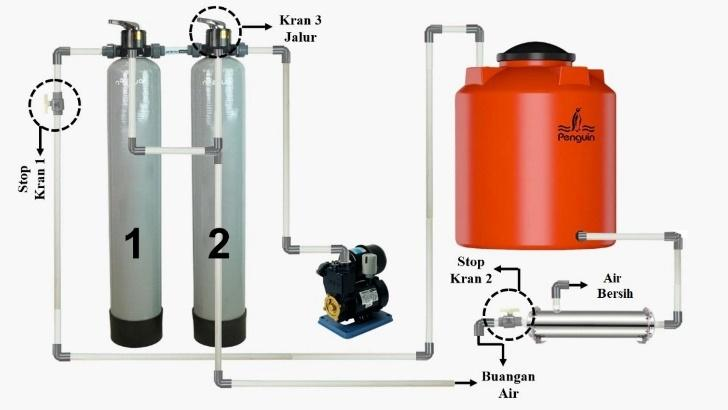

Hak Paten : (P00202104922)
Peralatan yang digunakan terdiri dari pompa, sand filter, membran ultrafiltrasi, pipa, valve, pressure gauge, dan penampung air. Air baku didorong menggunakan pompa menuju tahap filtrasi pasir pada sand filter 1 untuk menahan partikel pengotor berukuran besar. Tahap selanjutnya air baku di proses pada sand filter 2 sebagai tahap adsorpsi bau maupun kandungan logam. Pada proses sand filter juga dilakukan proses backwashing dan fast rinse guna menghilangkan deposit partikel pengotor dalam jangka waktu tertentu. Air baku yang telah diproses pada tahap sand filter selanjutnya diproses menggunakan membran hollow fiber ultrafiltrasi. Air umpan di dorong menggunakan pompa pada membran hollow fiber ultrafiltrasi hingga tekanan 2 Bar. Air bersih yang diperoleh dari permeat membran hollow fiber ultrafiltrasi ditampung pada penampung air. adapaun retentat yang dihasilkan oleh membran hollow fiber ultrafiltrasi menjadi air buangan dari proses membran hollow fiber.

Fungsi sebagai penyaring akhir untuk menyaring partikel berukuran sangat kecil (0.01 – 0.1 mikron), termasuk Bakteri, Virus, Koloid, Endapan mikro dan bahan tersuspensi. Dengan ini, air hasil filtrasi (permeat) menjadi jernih, higienis, dan aman dikonsumsi atau digunakan untuk proses industri.